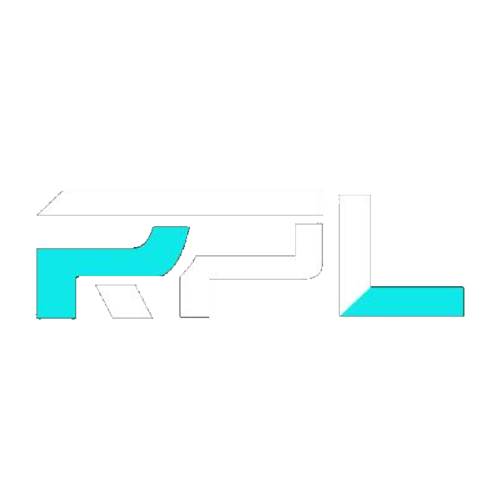
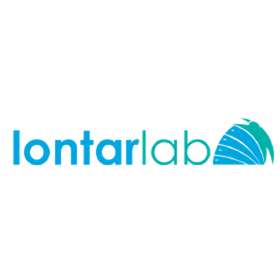

Rekayasa Perangkat Lunak dan Gim
Deskripsi
Pengembangan Perangkat Lunak dan Gim (PPLG) adalah satu bidang profesi yang mendalami cara-cara pengembangan perangkat lunak termasuk pembuatan, pemeliharaan, manajemen organisasi, dan manajemen kualitas.
Kompetensi Dasar
- Pemrograman Dasar
- Jaringan Komputer Dasar
- Sistem Komputer
- Kerja Proyek
- Administrasi Database
- Pemrograman Web dan Perangkat Bergerak
- Pemodelan Perangkat Lunak
- Java Mobile
- Android Studio
Tujuan Pembelajaran
Tujuan pembelajaran PPLG di SMKN 1 Subang adalah bisa menjalankan fungsi bisnis dan edukasi. Pada fungsi bisnis,
kegiatan pembelajaran berorientasi terhadap keuntungan (laba usaha). Sedangkan fungsi edukatif dimaksudkan
sebagai wahana belajar warga sekolah terutama peserta didik untuk pelatihan kewirausahaan sehingga tujuan akhirnya
menghasilkan wirausahawan (enterprenuer).
Pembelajaran ini didukung juga oleh Unit Produksi SMKN 1 Subang, yang berpusat pada kegiatan usaha disetiap program keahlian yang terdiri dari Rekayasa Perangkat
Lunak (RPL), dan Teknik Komputer dan Jaringan (TKJ).
Tenaga Pengajar Produktif
- Rizal Suyaman, S.Kom
- Imas Rohayati, S.T
- Intjer Kurnia Syukur, S.T
- Dede Iskandar, S.T
- Taufiq Dzikri Pangestu, S.Pd
Institusi Pasangan
 |
 |  |